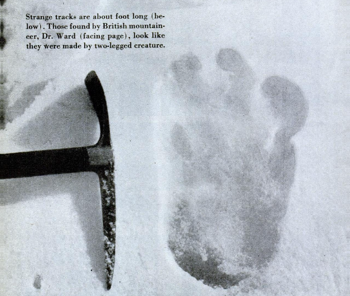

Over the past few years, rumors have circulated in Japan about the existence of polar Humanoid Life Forms inhabiting the icy waters of the Antarctic called Ningen (人間, "Ningen", meaning "human"). Reportedly observed on multiple occasions by crew members of government-operated "whale research" ships, these so-called Ningen are said to be completely white in color with an estimated length of 20 to 30 meters. Eyewitnesses describe them having a human-like shape, often with legs, arms, and even five-fingered hands. Sometimes they are described as having fins or a large mermaid-like tail instead of legs, or even tentacles and cephalopod arms and sometimes they are armless small bipedal humanoids, similar to the Fresno Nightcrawlers.
Most of the photo evidence of the Ningen was either hoaxed or artistic interpretations. According to Wikipedia.org, the Ningen first appeared on the Internet in the mid-2000s and was most likely an Internet hoax.
The Yeti is known as the "Abominable Snowman" since it hails from the cold climate of the Himalayan Mountains -- and because its name loosely translates to "metoh-kangmi," which means "man-bear snowman." However, this elusive creature doesn't look like a snowman at all.
Covered in brown fur, the Yeti reportedly resembles a human-gorilla hybrid or possibly even a bear, and it stands more than 11 feet (3.3 meters) tall.
The Mongolian Death Worm's native name, Olgoi-Khorkhoi, means "intestine worm" due to its red, blood-like color and size, which is the size of an intestine. It has been described by many people as being from 2-7 feet long and having the ability to spit out a corrosive yellow saliva and to generate blasts of electricity. However this latter power is thought of as being folkloric by the nomads of the Gobi. Western culture has come to call this monster the "Mongolian Death Worm".
Nobody is entirely sure what the worm actually is. Experts are certain it is not a real worm because the Gobi Desert is too hot an area for annelids to survive. Some have suggested it might be a skink, but they have little legs and scaly skin whereas witness accounts specify the worm is limbless and smooth bodied. The most probable explanation is that the Death Worm is a new species of amphisbaenia or worm-lizard, a group of burrowing reptiles. Although the native Mongolian people are convinced of the Death Worm's nature..
The Yeti is known as the "Abominable Snowman" since it hails from the cold climate of the Himalayan Mountains -- and because its name loosely translates to "metoh-kangmi," which means "man-bear snowman." However, this elusive creature doesn't look like a snowman at all.
Covered in brown fur, the Yeti reportedly resembles a human-gorilla hybrid or possibly even a bear, and it stands more than 11 feet (3.3 meters) tall.